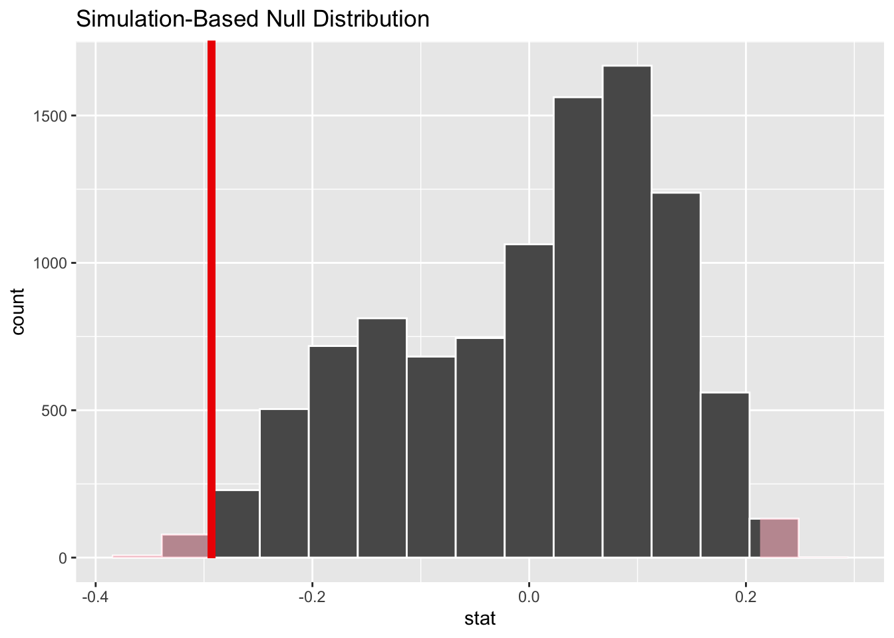

library(tidyverse)
library(tidymodels)Tidy hypotheses
STA 199
Bulletin
- this
aeis due for grade. Push your completed ae to GitHub within 48 hours to receive credit - homework 5 released today
- project draft report due April 7th to your GitHub repo.
Getting started
Clone your ae22-username repo from the GitHub organization.
Today
By the end of today you will…
- hypothesis test the tidy way
- practice more than testing proportions
Load packages
Notes
Not just a coin flip
- Here’s an example of testing a proportion outside the context of coins.
push_pull = read_csv("https://sta101-fa22.netlify.app/static/appex/data/push_pull.csv")push_pull %>%
slice(1:3, 24:26)# A tibble: 6 × 7
participant_id age push1 push2 pull1 pull2 training
<dbl> <dbl> <dbl> <dbl> <dbl> <dbl> <chr>
1 1 41 41 45 16 17 density
2 2 32 35 44 9 11 density
3 3 44 33 38 10 11 density
4 24 36 31 60 9 15 gtg
5 25 50 35 42 9 12 gtg
6 26 34 23 39 9 13 gtg The push_pull dataset comes from a “mini study” by mountain tactical institute.
26 individuals completed 1 of 2 exercise regiments for 3.5 weeks to increase their pushups and pullups. Codebook below:
participant_id: unique identifier for each participantage: age of participantpush1/2: push-ups at beginning and end of program respectivelypull1/2: pull-ups at beginning and end of program respectivelytraining: which training protocol the individual participated in
push_pull = push_pull %>%
mutate(
pct_push_inc = (push2 / push1 ) - 1,
pct_pull_inc = (pull2 / pull1) - 1)Hypothesis: “Most people who train consistently will see at least a 15% increase in push-ups over a 3.5 week training period.”
Breaking it down:
- “Most” i.e. “greater than 50%” indicates we should examine a proportion.
Exercise 1
What’s the null?
“will see at least a 15% increase”. Each person either increases by 15% over 3.5 weeks or does not. This is our binary outcome.
create a new column called
over_15pctthat tells you whether or not an individual achieved at least a 15% increase in push-ups
# code here- What would be a default theory (null hypothesis)?
Exercise 2
Write the null and alternative in mathematical notation.
Exercise 3
What is the observed statistic? Compute and write it in mathematical notation.
Exercise 4
Next, simulate under the null and compute the p-value. State your conclusion with \(\alpha = 0.05\). As a bonus, visualize the null distribution and shade in the p-value.
More than a proportion
- What if we want to make a claim about a different population parameter than a proportion? Maybe a mean, or median? We can’t necessarily flip a coin. The answer, is once again, bootstrap sampling.
Hypothesis: “The mean age of push-up/pull-up training participants is greater than 30”.
Let’s investigate this hypothesis with a significance level \(\alpha = 0.01\).
Exercise 5
Write down the null and alternative hypotheses in words and mathematical notation
Exercise 6
What is the observed statistic? Write it in mathematical notation.
Bootstrapping does the following…
# find observed statistic
obs_mean_age = push_pull %>%
drop_na(age) %>%
summarize(meanAge = mean(age)) %>%
pull()
# subtract observed_mean - desired_mean from age
age_and_null = push_pull %>%
select(age) %>%
drop_na(age) %>%
mutate(nullAge = age - (obs_mean_age - 30))
# show data frame
age_and_null# A tibble: 25 × 2
age nullAge
<dbl> <dbl>
1 41 35.8
2 32 26.8
3 44 38.8
4 37 31.8
5 37 31.8
6 21 15.8
7 33 27.8
8 38 32.8
9 49 43.8
10 33 27.8
# … with 15 more rows# show the means of each column
age_and_null %>%
summarize(meanAge = mean(age),
mean_nullAge = mean(nullAge))# A tibble: 1 × 2
meanAge mean_nullAge
<dbl> <dbl>
1 35.2 30If we take bootstrap samples from this new nullAge column, we are sampling from data with the same variability as our original data, but a different mean. This is a nice way to explore the null!
set.seed(3)
# simulate null
null_dist = push_pull %>%
specify(response = age) %>%
hypothesize(null = "point", mu = 30) %>%
generate(reps = 10000, type = "bootstrap") %>%
calculate(stat = "mean")
# get observed statistic
obs_stat = obs_mean_age
p_value = null_dist %>%
get_p_value(obs_stat, direction = "right")
p_value# A tibble: 1 × 1
p_value
<dbl>
1 0.0001- The p-value 1e-04 is less than \(\alpha = 0.01\). I reject the null hypothesis. In context, there is evidence to suggest that average push/pull trainee age is older than 30 years old.
Exercise 7
Say we are interested in the performance of trainees at this particular facility and the sample is representative of the population.
Hypothesis: The median number of pull-ups trainees can perform is less than 20 even after training for 3.5 weeks.
Write down the null and alternative hypothesis in mathematical notation.
Exercise 8
Write down the observed statistic. Simulate under the null and compute the p-value. Finally, visualize and interpret the p-value in context.
Summary
Hypothesis testing procedure
- Specify the null and alternative hypothesis. Choose or know \(\alpha\).
- Collect/examine the data. Compute the observed statistic.
- Simulate under the null and compute the p-value using the observed statistic and the alternative hypothesis.
- Compare the p-value to your significance level \(\alpha\) and reject or fail to reject the null. Interpret your result in context.
Which training method is better?
Two exercise regimes:
- “density” training
- “grease-the-groove” (gtg)
We want to know, is the average pull-up percent increase of a gtg trainee significantly different than a density trainee?
Fundamentally, does the categorical variable training affect the average percentage increase in pull-ups?
State the null hypothesis:
\[ \mu_d = \mu_{gtg} \]
\[ H_0: \mu_d - \mu_{gtg} = 0 \]
What we want to do to simulate data under this null:
random_training = sample(push_pull$training, replace = FALSE)
push_pull %>%
select(pct_pull_inc) %>%
mutate(random_training = random_training)Exercise 9:
- Complete the hypothesis specification above by stating the alternative. Check the observed statistic reported below.
# code hereSimulating under the null and computing the p-value:
sim_num = 10000
set.seed(1)
# simulate null
null_dist = push_pull %>%
specify(response = pct_pull_inc, explanatory = training) %>%
hypothesize(null = "independence") %>%
generate(reps = sim_num, type = "permute") %>%
calculate(stat = "diff in means", order = c("density", "gtg"))
# observed statistic
obs_stat = .196 - .489
# visualize / get p
visualize(null_dist) +
shade_p_value(obs_stat, direction = "both")
Exercise 10
Compute the p-value and state your conclusion with \(\alpha = 0.05\)
Summary of generate() options
1. draw
- description: flip a coin with probability p, or roll a die with probabilities associated with each side. See here for reference to the multinomial setting.
- typical case: test the proportion of a binary outcome
- null: proportion \(p\) is some fixed number
- Example (hypothesis test for a single proportion)
2. bootstrap
- description: re-sample your data with replacement
- typical case (in hypothesis testing): does the mean equal a specific value? Does the median equal a specific value?
- null: what would the data have looked like if nothing but the point estimate changed?
3. permute
- description: permutes variables
- typical case: is there a difference in the outcome between groups?
- associated null: group membership does not matter i.e. group A and group B have the same outcome
- Example (test for independence)